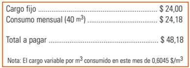
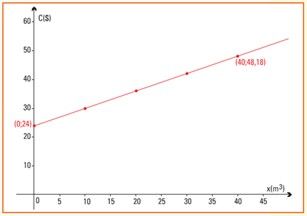
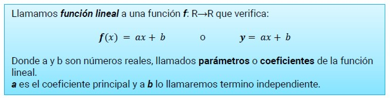
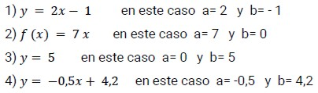
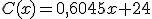
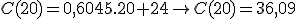
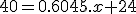
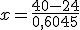
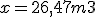

FUNCION LINEAL
El agua ocupa el 71 % de la superficie del planeta. Sin embargo, no toda el agua existente es adecuada para el consumo humano. Sólo el 0,8% de su volumen es aprovechable por los seres humanos. El agua que puede beber el hombre proviene de reservas naturales de agua dulce (como los lagos, ríos y lagunas), reservas artificiales (diques y azudes) y acuíferos subterráneos. La creciente escasez de aguas lleva a que la sociedad debe concientizarse con su uso y cuidado.
Con relación a este tema, si observamos la parte central de la factura de agua que la empresa proveedora del servicio envía a nuestro domicilio, por la el suministro mensual de agua potable, encontraremos los siguientes conceptos:

En la factura leemos primero un cargo fijo de $ 24,00, aunque no usemos agua en el período facturado. Seguidamente, se informa la cantidad de m3 que consumimos en nuestro domicilio este mes, 40 m3, y en la nota indican el precio por cada m3 de agua consumido ($ 0,6045 en este caso).
A partir de estos datos elaboramos la siguiente tabla donde se visualiza cuál es el costo si no consumimos agua en un mes y si consumimos 10 m3 :
|
Consumo mensual de agua (m3) |
0 |
10 |
|
Total a pagar factura Sameep ($) |
24 |
30,05 |
|  |
Con estos datos podemos:
Cuando representamos el problema con un gráfico, podemos observar que a iguales incrementos de la variable independiente x se producen aumentos proporcionales de la variable dependiente. Por esta razón decimos que la función consumo de agua es una función lineal. (Problema extraido deFunciones Elementales para construir modelos matemáticos, Buenos Aires, INET, Colección “Las Ciencias Naturales y la Matemática”. Pag. 52) |

Ejemplos

Volviendo a nuestro ejemplo, podemos determinar una fórmula para la función lineal que modelice el cálculo del costo total de la factura.
El costo fijo de la factura representará el término independiente, y el coeficiente principal estará dado por el costo por m3.
Teniendo en cuenta estos datos, podemos obtener la fórmula de la función lineal del Costo C(x) que será:

Si queremos calcular a cuánto ascenderá la factura de un domicilio que consume 20 m3 de agua en un mes, sólo debemos realizar el cálculo de la imagen de dicho valor x= 20 por la función C:

De esta manera podemos completar la tabla:
|
Consumo mensual de agua (m3) |
0 |
10 |
20 |
30 |
50 |
|
Total a pagar factura Sameep ($) |
24 |
30,05 |
36,09 |
42,14 |
54,23 |
Contar con la fórmula de la función costo nos permite responder una pregunta como la siguiente:
¿Cuántos m3 consumieron en la casa de Esteban si pagaron $ 40 por la boleta de agua en enero?
Utilizando la fórmula de la función costo:
Conocemos que el valor de C(x) = 40. Si queremos saber cuántos litros de agua consumieron en la casa de Esteban, debemos encontrar el valor de la variable x. Esto lleva a plantear una igualdad:

Y despejando

o bien

Así, el consumo en la casa de Esteban en el mes de enero fue de 26,47 m3.

Para ampliar el concepto de función lineal, te invitamos a visualizar el siguiente video:
Link - Función Lineal
Obra publicada con Licencia Creative Commons Reconocimiento Compartir igual 4.0